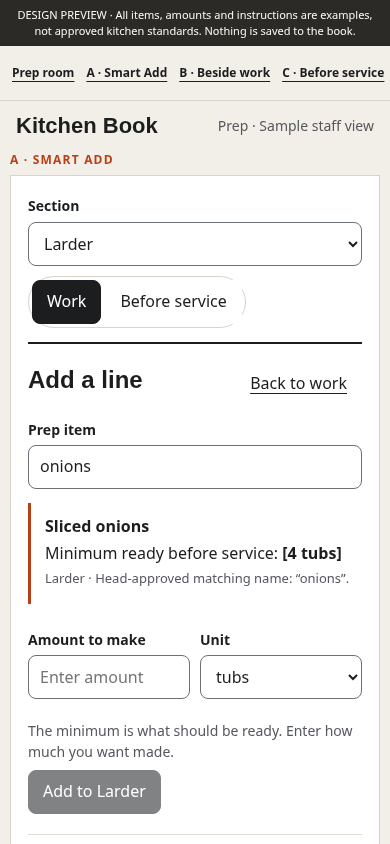
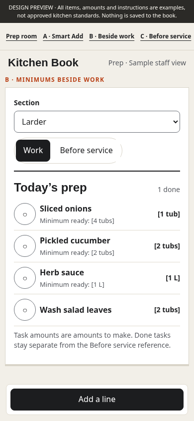
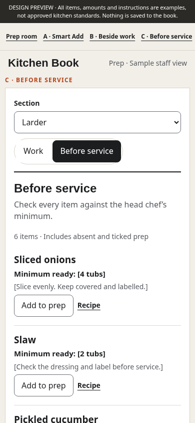
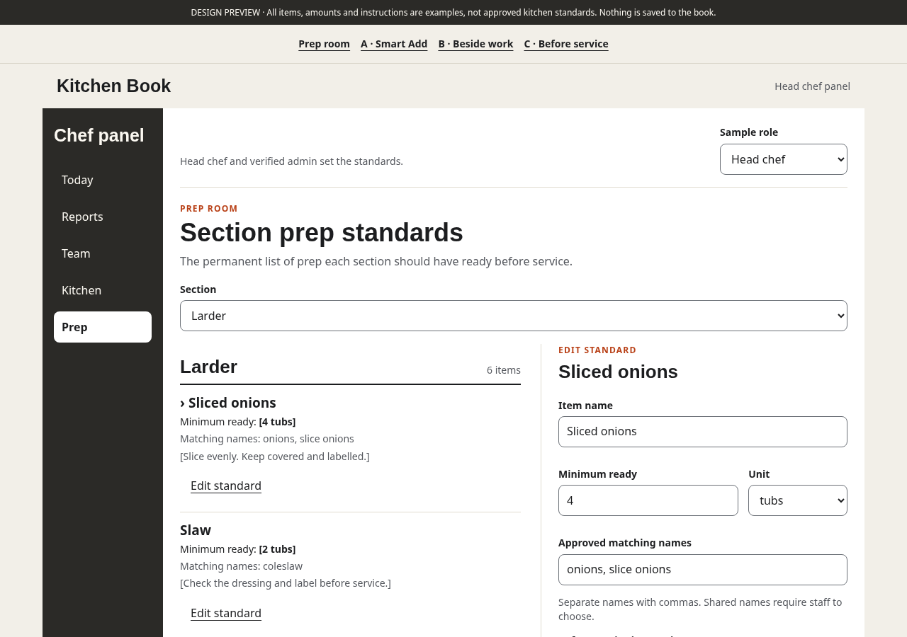

A · Normal prep entry
Show the minimum while typing
Head-approved names match within the selected section. The amount to make stays separate and unchanged.
Try smart entry
The head chef defines each section's prep and minimums. Normal typing reveals the relevant standard. Before service shows everything to check.
Head-approved names match within the selected section. The amount to make stays separate and unchanged.
Try smart entry
Show the same standard alongside a linked task after it has been added. Requested work stays distinct.
Open work example
The full head-chef list, including items absent from today's work and items already ticked.
Open section reference
Head chef and verified admin maintain the same standards. Sous chefs can open the room and read them. It is separate from Kitchen, inside the existing panel navigation.
Explore the Prep room
Match a unique full name or head-approved alias in the correct section. Show the canonical item and its minimum immediately. Offer choices for partial or ambiguous names. Never infer a target from learned quantities, silently change the amount to make, or treat a completed task as stock.
Current brief, source evidence and councilEarlier exploration, superseded
These are local mock interactions with synthetic data. They do not save to the book or validate production permissions. The first version is standards, typed guidance and a complete reference; stock calculations and saved check history are outside its scope.